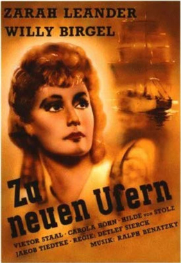
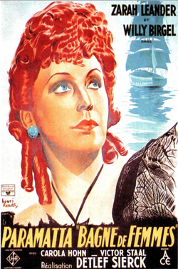
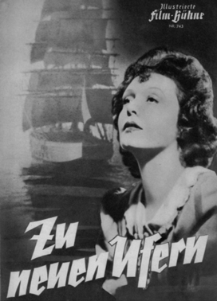

To New Shores
Zarah Leander
Viktor Staal
Edwin Jürgensen
Hilde von Stolz
Robert Dorsay
Siegfried Schürenberg
Lissy Arna
Mady Rahl
Paul Bildt
SYNOPSIS
In 1846 the actress Gloria Vane is performing at the Adelphi Theatre, London. She is in love with the destitute nobleman Albert Finsbury, who is shortly departing to Australia to become an officer in the Queen's regiment. He is supposed to pay his debts before leaving and uses an altered cheque to do so. After Finsbury has left, the forgery is discovered. To protect him, Gloria claims responsibility and is sentenced to 7 years in the notorious Paramatta prison, Sydney. From prison she sends a note to him asking for help, but he does not reply.
An Aussie seller falls in love with her and asks her to marry him - she agrees, but only so she can get out of prison. When she finds out Finsbury is planning to marry the Governor's daughter, she is heartbroken. Finsbury finally finds her, but she no longer loves him.
A 1937 drama film directed by Detlef Sierck (later known as Douglas Sirk) and starring Zarah Leander, Willy Birgel and Viktor Staal. It was Leander's first film for the German studio UFA, and its success brought her into the front rank of the company's stars. It was shot at the Babelsberg Studio in Berlin.


